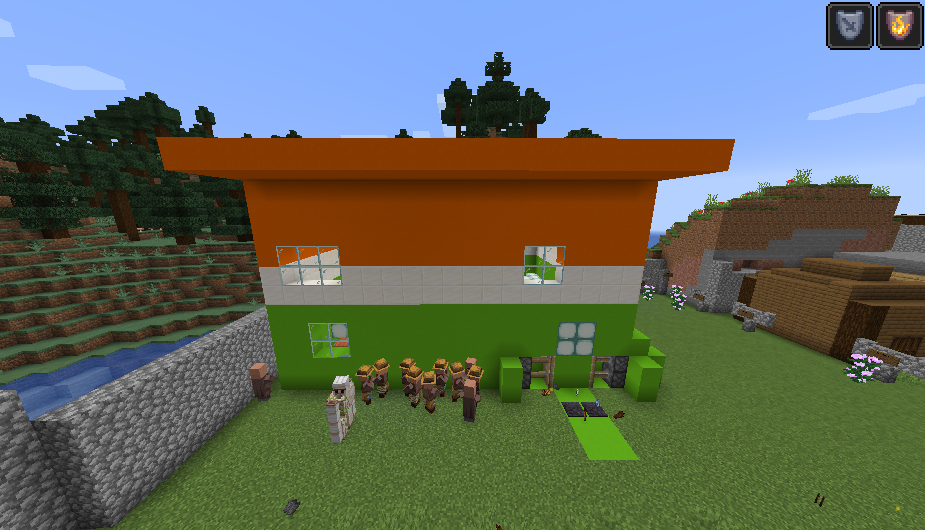
Торговый дом «Панда»
Главный продуктовый магазин Визограда. Здесь продаются продукты, игрушки и всё нужное для жизни города.
Главные места города — от дворца и храма до заводов и зоопарка.
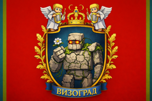

Главный продуктовый магазин Визограда. Здесь продаются продукты, игрушки и всё нужное для жизни города.
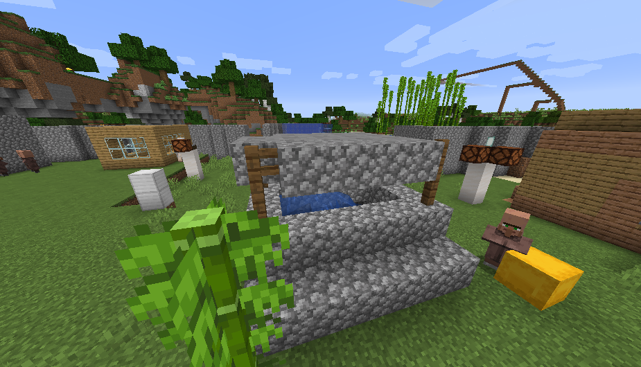
Старинный городской колодец, важный источник воды и спокойное место у площади.
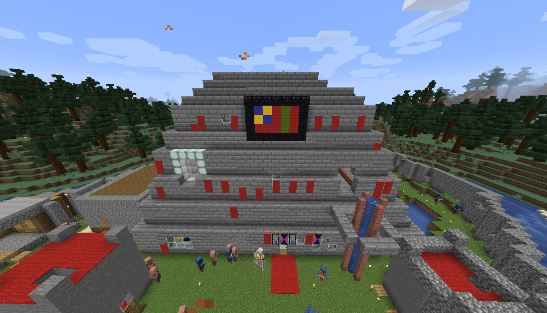
Первый этаж — жилой. Второй этаж — для председателей и запасных помещений. Третий этаж — склад. На вершине дворца развевается флаг Визограда.
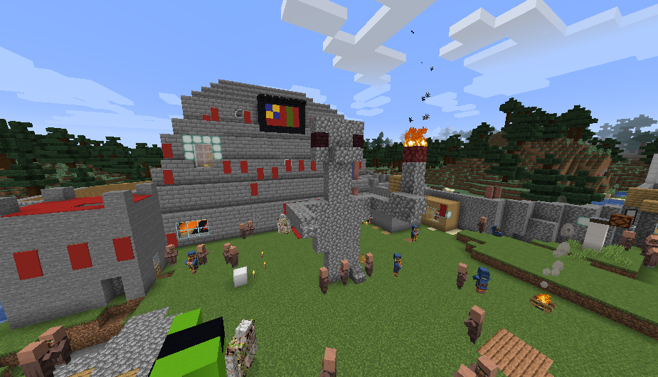
Памятник рядом с дворцом. Руслан держит палёную свиную рульку в огне — яркий и запоминающийся символ города.
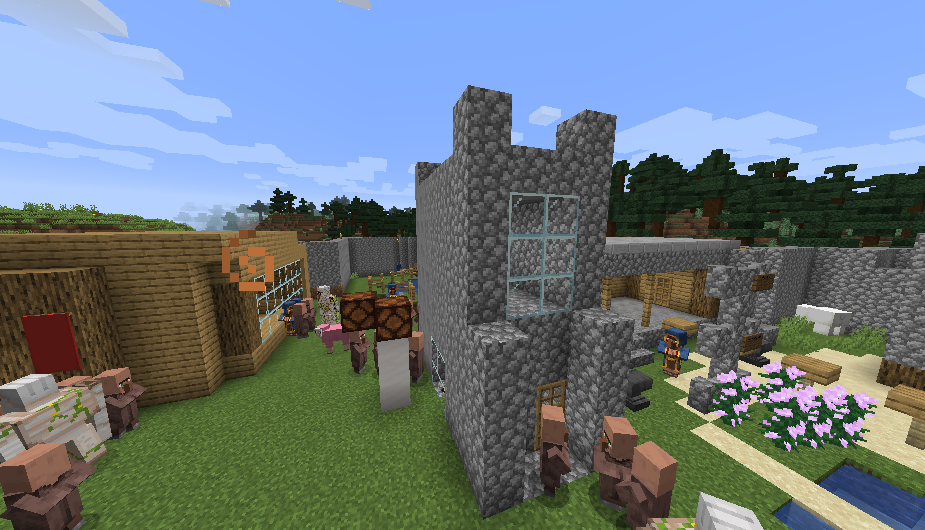
Главная церковь города, где служит патриарх. Рядом горит вечный огонь — знак памяти и уважения.
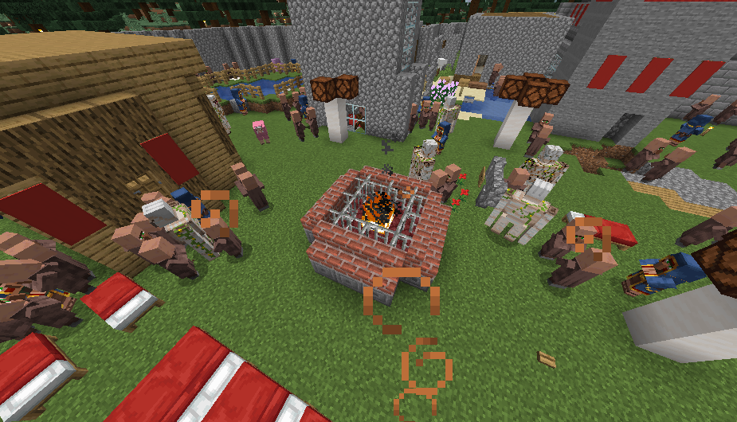
Памятное место рядом с церковью, символ памяти и уважения к прошлому Визограда.
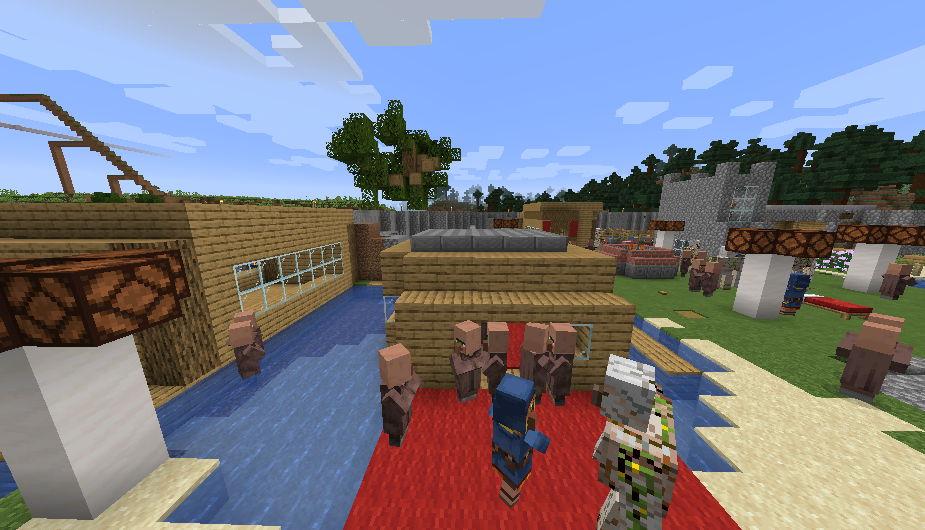
Дом на озере, стоящий у воды. Тихое и красивое место, связанное с рыбалкой и спокойной жизнью.
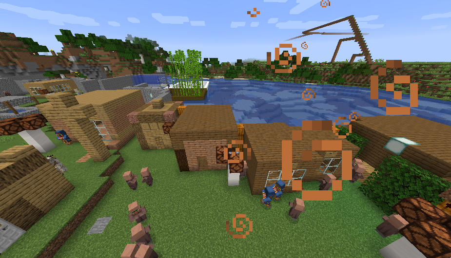
Расположены рядом с домом рыбака и площадью. Здесь продают кебаб, листья и другие товары для жителей и гостей.
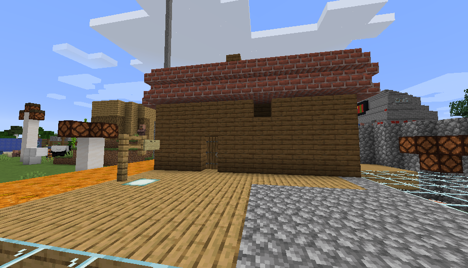
Красивая круглосуточная баня с паром и дымом. Одно из самых уютных зданий Визограда.
Городская школа, где учатся жители Визограда и продолжается жизнь государства.
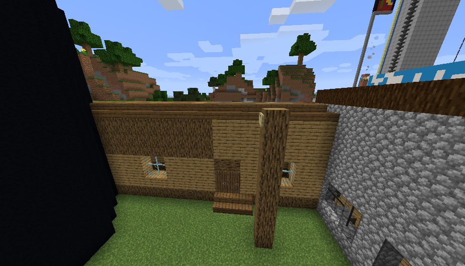
Здание воинского учёта и подготовки. Один из важных центров обороны Визограда.
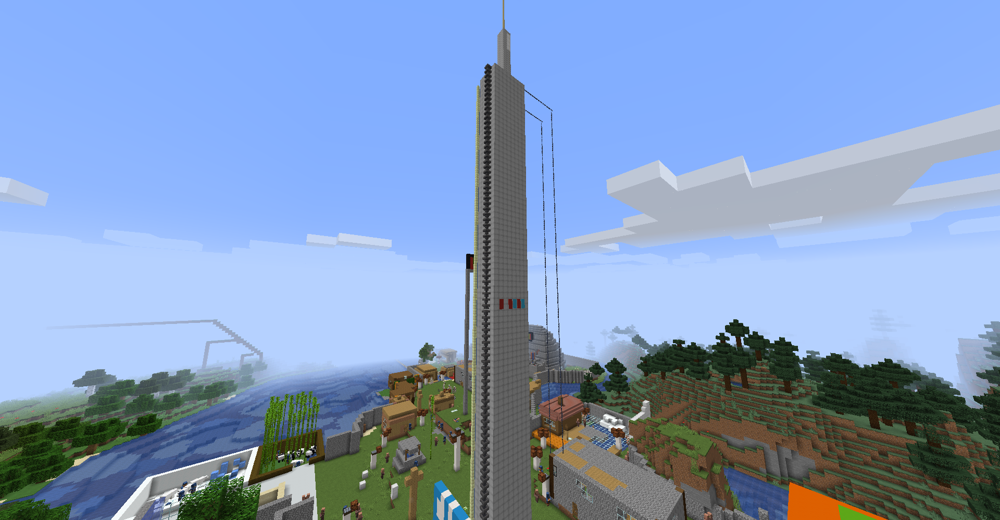
Высокая городская башня связи. Она помогает передавать сигнал, держит связь между районами и стала заметной точкой на карте Визограда.
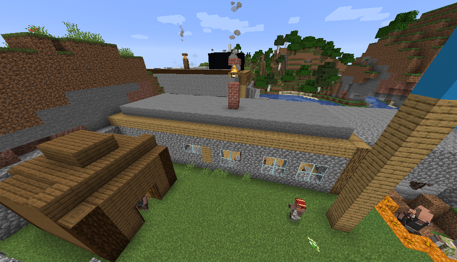
Общий промышленный завод Визограда. Здесь идёт производство для города и его развития.
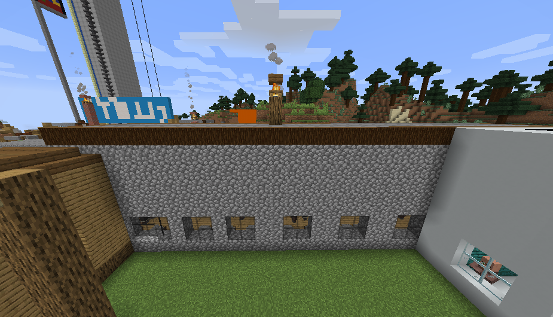
Предприятие по изготовлению камня. Важная часть экономики и строительства.
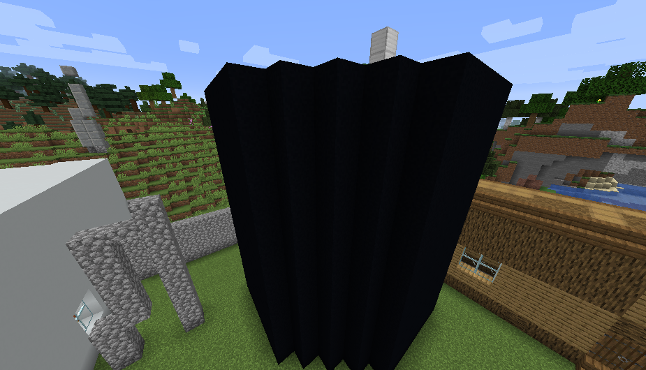
Современный промышленный объект Визограда. Обеспечивает город топливом и ресурсами.
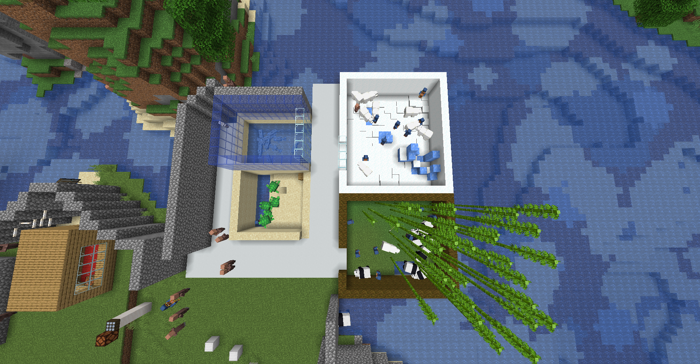
Тихий зелёный уголок города, где живут белые медведи, панды, дельфины и черепахи.
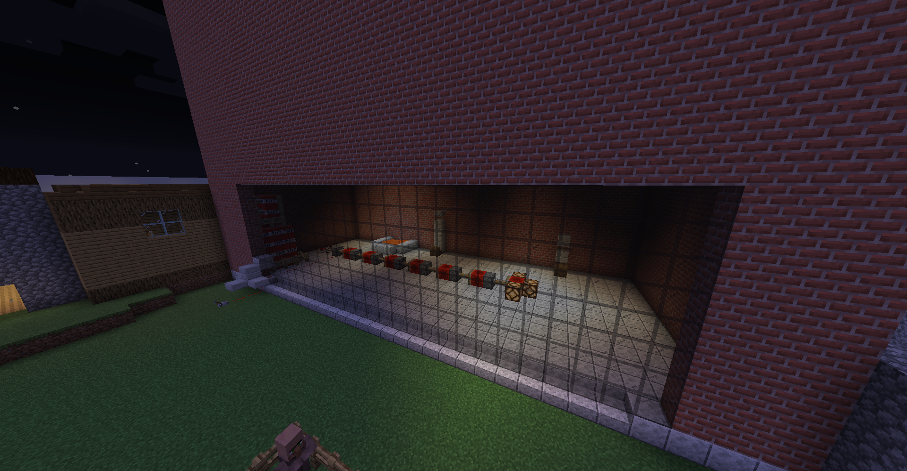
Главная электростанция Визограда, обеспечивающая Алексеевку энергией. Один из крупнейших и самых важных промышленных объектов государства.